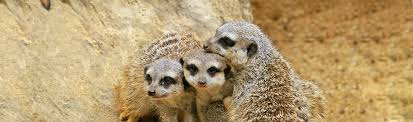

Este tipo e especes é comum por ter um focinho pontiagudom de corpo longo e negra na extremidade da cauda. A zona ventral está apenas parcialmente coberta por pelo. Tem uma máscara de pelagem negra em torno dos olhos e longas garras nas patas dianteiras.
O rosto desses mamíferos é pequenino e com formato pontiagudo, suas orelhas são pequenas e os olhos possuem manchas escuras em volta. Seu corpo é delgado com cerca de 29 centímetros de comprimento. A cauda possui cerca de 19 centímetros sendo pontiaguda e com a ponta preta. A pelagem pode ter tonalidades cinza-clara ou bege com faixas escuras nas suas costas. Possuem garras alongadas em suas patas dianteiras. Alimentação dos Suricatos
Os pequeninos têm como base alimentar artrópodes de pequeno porte com destaque para aranhas e escaravelhos. Para poder se alimentar desses animais possuem garras e dentes bem afiados que penetram as carapaças quitinosas. É comum que os suricatos adotem uma postura apoiada nas patas traseiras usando a cauda como um terceiro ponto de apoio. A dimensão das populações selvagens varia com as flutuações locais na precipitação e predação.Não existem fatores de ameaça consideráveis já que a maior parte da população vive em áreas protegidas bem geridas e de grandes dimensões. 